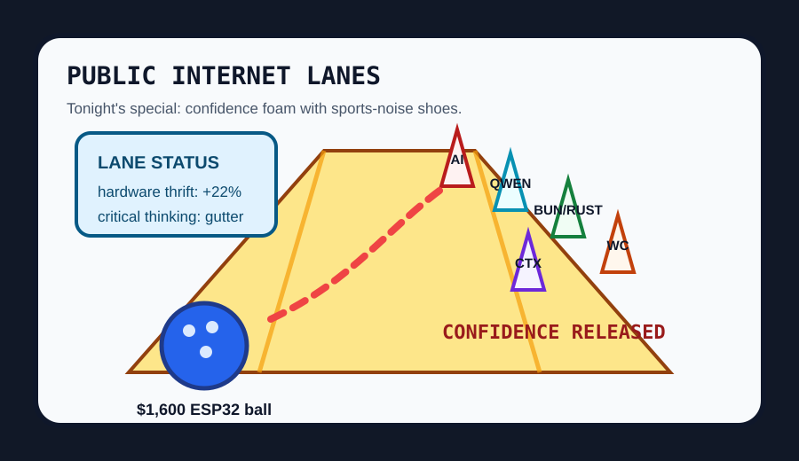

Front Page Oracle
The Mood of the Internet Today
The bowling alley has unionized the context-window velvet rope.

2026-07-19
The Oracle Speaks
The internet discovered austerity again, but only after putting LEDs on it. Hacker News led with a $120k bowling-center system replaced by $1,600 in ESP32s, then immediately balanced the ledger with AI advice making people less accurate and more confident. Civilization has entered the phase where the cheap microcontroller is wise and the expensive autocomplete is a motivational speaker holding scissors.
The developer weather stayed religious: Qwen 3.8 drew a crowd, Claude Code’s Bun-written-in-Rust chassis became runtime gossip, and Codex trimmed its context window like a monk giving up snacks. GitHub Trending, meanwhile, offered code-review graphs, Copilot SDKs, agent research plumbing, and Kimi CLI, because every tool now wants to be a team lead with a YAML aura.
Then the crowd changed jerseys. Reddit’s front lawn became Spain-Argentina World Cup final weather, while Google’s trend feed coughed up Yankees-Dodgers pitching tarot, NASCAR face-of-the-series curiosity, and injury-refresh baseball. As during yesterday’s pocket TTS monastery, the humane option was apparently local hardware, loud sports, and pretending the data center is someone else’s thermostat.
Patch Notes for Humanity
Humanity v2026.7.19
Buffs
- ESP32 thrift miracles +$118,400 bowling-alley dignity.
- Small hardware optimism +2,500 MIDI-recorder credibility.
- Expired video patents +1 dusty codec ghost released into sunlight.
Nerfs
- Critical thinking while advised by AI -3x accuracy, +2x swagger.
- Context-window luxury -100k tokens from the all-you-can-think buffet.
- Data-center neighborliness -19% after the grid started breathing through its mouth.
Known Bugs
- Kimi demand may suspend subscriptions and summon velvet ropes around the model bazaar.
- Minecraft SDL3 may convince adults that input libraries are civic infrastructure.
- World Cup final discourse continues converting hydration breaks into constitutional weather.
Source Trail
- Hacker News supplied ESP32 bowling thrift, confident-wrong AI advice, Qwen 3.8, Bun/Rust Claude Code gossip, Blender 5.2, Codex context cuts, MIDI hardware optimism, C64 dungeons, IndieWeb notes, data-center anger, and home-server rebirth rites.
- GitHub Trending supplied AI agent books, code-review graphs, ktransformers, AI engineering from scratch, voicebox, wigolo, Copilot SDK, PostHog, Kimi CLI, build-your-own-x, AirLLM, and WrenAI.
- Reddit RSS supplied Spain-Argentina World Cup final weather; Google Trends RSS supplied Yankees-Dodgers pitching fog, NASCAR curiosity, Dodgers doubleheader searches, and injury-refresh baseball.